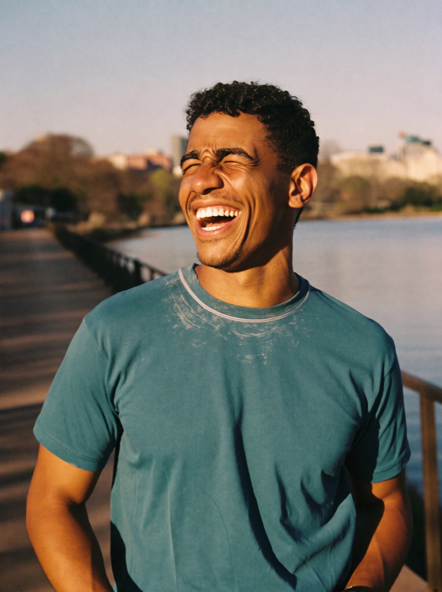
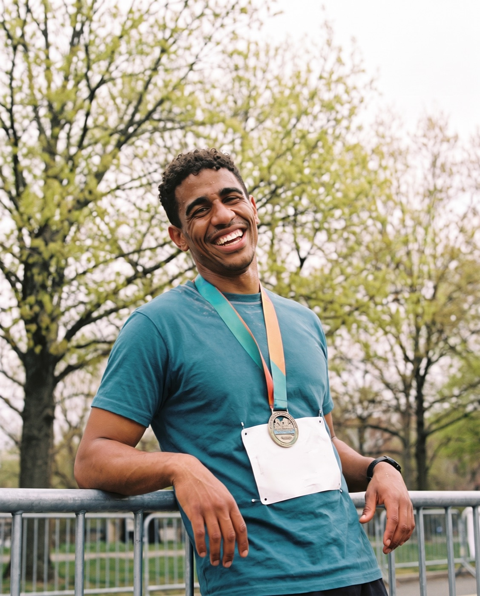

<!doctype html>
<html lang="en">
<head>
<meta charset="utf-8">
<meta name="viewport" content="width=393, initial-scale=1">
<title>Kinship · Stage 1 compositions</title>
<!-- Stage 1 compositing page. Query: dir=a|b · screen=today|person · photo=1|0.
     This is a compositing tool for stills, not a prototype: no interaction, no responsive layout, no tokens. -->
<link rel="preconnect" href="https://fonts.googleapis.com">
<link href="https://fonts.googleapis.com/css2?family=Fraunces:ital,opsz,wght,SOFT@0,9..144,300..900,0..100;1,9..144,300..900,0..100&family=Archivo:ital,wght@0,400..900;1,400..900&family=Instrument+Sans:ital,wght@0,400..700;1,400..700&family=Newsreader:ital,opsz,wght@0,6..72,400..600;1,6..72,400..600&display=block" rel="stylesheet">
<style>
  html, body { margin: 0; padding: 0; background: #111; }
  .phone { position: relative; width: 393px; height: 852px; overflow: hidden; font-family: "Instrument Sans", system-ui, sans-serif; -webkit-font-smoothing: antialiased; }
  .phone * { box-sizing: border-box; }
  .abs { position: absolute; }
  img.art { position: absolute; display: block; pointer-events: none; }

  /* status bar, shared */
  .status { position: absolute; top: 0; left: 0; right: 0; height: 54px; display: flex; align-items: center; justify-content: space-between; padding: 10px 30px 0 30px; font: 600 15px/1 "Instrument Sans"; z-index: 40; }
  .status .island { position: absolute; left: 50%; top: 11px; width: 124px; height: 36px; transform: translateX(-50%); background: #000; border-radius: 20px; }
  .status .sig { display: flex; gap: 6px; align-items: center; }
  .status.light { color: #FBF4E6; }

  /* bottom: Tell + two-item bar, shared */
  .tell { position: absolute; left: 20px; right: 20px; bottom: 60px; height: 52px; border-radius: 26px; display: flex; align-items: center; padding: 0 20px; font: 400 17px/1 "Instrument Sans"; z-index: 30; }
  .bar { position: absolute; left: 0; right: 0; bottom: 12px; height: 40px; display: flex; justify-content: center; gap: 64px; align-items: center; font: 600 15px/1 "Instrument Sans"; z-index: 30; }
  .bar span { position: relative; padding: 6px 2px; }
  .bar span.on::after { content: ""; position: absolute; left: 0; right: 0; bottom: -2px; height: 2px; border-radius: 1px; }
  .home { position: absolute; left: 50%; bottom: 8px; width: 134px; height: 5px; border-radius: 3px; transform: translateX(-50%); z-index: 31; }
  .label { font: 600 11px/14px "Instrument Sans"; letter-spacing: .16em; text-transform: uppercase; }
  .prov { display: flex; align-items: center; gap: 7px; font: 600 10.5px/14px "Instrument Sans"; letter-spacing: .14em; text-transform: uppercase; }
  .prov i { display: inline-block; width: 7px; height: 7px; border-radius: 50%; }
  .pill { display: inline-flex; align-items: center; justify-content: center; height: 50px; padding: 0 26px; border-radius: 25px; font: 700 16px/1 "Instrument Sans"; }
  .ghost { font: 500 16px/1 "Instrument Sans"; margin-left: 22px; }
  .grain { position: absolute; inset: 0; pointer-events: none; z-index: 35; opacity: .32; mix-blend-mode: multiply; background-image: url("data:image/svg+xml;utf8,<svg xmlns='http://www.w3.org/2000/svg' width='220' height='220'><filter id='n'><feTurbulence type='fractalNoise' baseFrequency='.9' numOctaves='2' stitchTiles='stitch'/><feColorMatrix values='0 0 0 0 0  0 0 0 0 0  0 0 0 0 0  0 0 0 .34 0'/></filter><rect width='100%' height='100%' filter='url(%23n)'/></svg>"); }

  /* ============================================================
     DIRECTION A · Electric Garden, reinvented
     ============================================================ */
  .a { --paper: #F6F3EC; --ink: #0B2A1D; --quiet: #5B6A61; --lime: #BDF24E; --pink: #FF4FA3; --orange: #FF6A2B; --lav: #CDBBFF; --butter: #FFE86A; background: var(--paper); color: var(--ink); }
  .a .status { color: var(--ink); }
  .a .wash { position: absolute; left: 0; right: 0; top: 0; height: 560px; z-index: 0; opacity: .9;
    background:
      radial-gradient(420px 360px at 92% 8%, rgba(255,106,43,.42), transparent 70%),
      radial-gradient(380px 330px at 70% 30%, rgba(255,79,163,.30), transparent 70%),
      radial-gradient(320px 300px at 10% 36%, rgba(205,187,255,.45), transparent 70%),
      radial-gradient(260px 220px at 30% 6%, rgba(255,232,106,.5), transparent 70%);
    -webkit-mask-image: linear-gradient(to bottom, #000 55%, transparent 100%); mask-image: linear-gradient(to bottom, #000 55%, transparent 100%); }
  .a .blob { position: absolute; overflow: hidden; }
  .a .blob img { width: 100%; height: 100%; object-fit: cover; display: block; filter: saturate(1.08) contrast(1.04); }
  .a h1.name { position: absolute; margin: 0; font: 900 120px/.86 "Archivo"; letter-spacing: -.045em; color: var(--ink); z-index: 6; }
  .a h2.say { position: absolute; margin: 0; font: 800 40px/1.02 "Archivo"; letter-spacing: -.03em; color: var(--ink); z-index: 6; }
  .a .fact { position: absolute; left: 26px; right: 26px; z-index: 6; }
  .a .fact .ev { font: 600 15px/20px "Instrument Sans"; color: var(--ink); }
  .a .fact .para { font: 400 21px/27px "Newsreader"; font-style: italic; font-variation-settings: "opsz" 24; color: var(--ink); margin-top: 4px; }
  .a .prov { color: var(--quiet); margin-top: 8px; }
  .a .prov i { background: #6DBF2A; }
  .a .cta { position: absolute; left: 26px; z-index: 6; display: flex; align-items: center; }
  .a .pill { background: var(--ink); color: #F6F3EC; }
  .a .ghost { color: var(--quiet); }
  .a .week { position: absolute; left: 26px; right: 26px; z-index: 6; display: flex; gap: 18px; align-items: baseline; font: 500 13px/16px "Instrument Sans"; color: var(--quiet); border-top: 1px solid rgba(11,42,29,.14); padding-top: 9px; }
  .a .week b { font: 700 10.5px/16px "Instrument Sans"; letter-spacing: .14em; color: var(--ink); }
  .a .tell { background: #fff; color: #7B877F; box-shadow: 0 1px 0 rgba(11,42,29,.10), 0 8px 24px rgba(11,42,29,.08); }
  .a .bar { color: #7B877F; } .a .bar .on { color: var(--ink); } .a .bar .on::after { background: var(--ink); }
  .a .home { background: var(--ink); }
  /* no-photo: the name is the picture */
  .a h1.window { position: absolute; margin: 0; font: 900 164px/.82 "Archivo"; letter-spacing: -.05em; z-index: 6; color: transparent; -webkit-background-clip: text; background-clip: text; background-image: url("assets/a-bloom-corner.png"); background-size: 520px auto; background-position: -120px -60px; background-color: var(--orange); }
  /* person page */
  .a .back { position: absolute; left: 22px; top: 60px; z-index: 8; }
  .a .sec { position: absolute; left: 26px; right: 26px; z-index: 6; }
  .a .sec .label { display: flex; align-items: center; gap: 8px; color: var(--quiet); margin-bottom: 7px; }
  .a .sec .label i { width: 8px; height: 8px; border-radius: 50%; display: inline-block; }
  .a .line { font: 400 20px/26px "Newsreader"; font-variation-settings: "opsz" 20; color: var(--ink); }
  .a .line small { display: block; font: 400 15px/20px "Instrument Sans"; color: var(--quiet); margin-top: 1px; }
  .a .sec .prov { margin-top: 5px; margin-bottom: 14px; }
  .a .more { position: absolute; left: 26px; z-index: 6; font: 600 14px/18px "Instrument Sans"; color: var(--ink); }
  .a .actions { position: absolute; left: 20px; right: 20px; bottom: 22px; display: flex; gap: 10px; z-index: 30; }
  .a .actions .pill { flex: 1; } .a .actions .pill.o { background: transparent; color: var(--ink); border: 1.5px solid rgba(11,42,29,.28); }
  .a .actions .pill.ic { flex: 0 0 50px; padding: 0; background: transparent; border: 1.5px solid rgba(11,42,29,.28); }
  .a .mem { display: flex; gap: 14px; align-items: flex-start; }
  .a .mem .blob { position: relative; width: 92px; height: 98px; flex: 0 0 92px; }

  /* ============================================================
     DIRECTION B · Living Memories
     ============================================================ */
  .b { --sand: #F2E9DA; --navy: #15203F; --quiet: #6B6356; --sunset: #FF6B45; --sun: #FFC629; --ocean: #12A68F; --sky: #2F6BFF; --boug: #FF5BAE; --cream: #FBF4E6; background: var(--sand) url("assets/paper-sand.jpg") center/cover; color: var(--navy); }
  .b .paperfade { position: absolute; inset: 0; background: rgba(242,233,218,.55); z-index: 0; }
  .b .hero { position: absolute; left: 0; right: 0; top: 0; overflow: hidden; z-index: 1; }
  .b .hero img { width: 100%; height: 100%; object-fit: cover; display: block; filter: saturate(1.06) contrast(1.02); }
  .b .hero .grade { position: absolute; inset: 0; background: linear-gradient(to top, rgba(21,32,63,.55) 0%, rgba(21,32,63,.08) 42%, transparent 60%), linear-gradient(to bottom, rgba(21,32,63,.42) 0%, transparent 26%); }
  .b .hero .warm { position: absolute; inset: 0; background: var(--sunset); mix-blend-mode: soft-light; opacity: .35; }
  .b .hero .field { position: absolute; inset: 0; background: linear-gradient(160deg, var(--sunset) 0%, var(--sunset) 58%, var(--boug) 58.2%, var(--boug) 100%); }
  .b .ontop { position: absolute; left: 26px; z-index: 5; color: #fff; text-shadow: 0 1px 2px rgba(0,0,0,.35), 0 2px 14px rgba(0,0,0,.25); }
  .b .ontop .cap { font: 400 13px/17px "Instrument Sans"; font-style: italic; margin-top: 4px; }
  .b .ontop .prov { color: rgba(251,244,230,.85); margin-top: 3px; }
  .b .ontop .prov i { background: var(--sun); }
  /* the split headline: cream over the photograph, navy over the paper */
  .b .split { position: absolute; left: 20px; z-index: 6; }
  .b .split .top, .b .split .bot { position: absolute; left: 0; overflow: hidden; width: 380px; }
  .b .split h1 { margin: 0; font: 900 150px/1 "Fraunces"; font-variation-settings: "opsz" 144, "SOFT" 60; letter-spacing: -.035em; white-space: nowrap; }
  .b .split .top h1 { color: var(--cream); }
  .b .split .bot h1 { color: var(--navy); }
  .b .band { position: absolute; background: var(--sun); z-index: 0; }
  .b .mark { position: absolute; z-index: 7; mix-blend-mode: multiply; }
  .b h2.say { position: absolute; margin: 0; left: 26px; z-index: 6; white-space: nowrap; font: 600 33px/1.02 "Fraunces"; font-style: italic; font-variation-settings: "opsz" 48, "SOFT" 30; letter-spacing: -.02em; color: var(--navy); }
  .b .fact { position: absolute; left: 26px; right: 26px; z-index: 6; }
  .b .fact .ev { font: 600 15px/20px "Instrument Sans"; color: var(--navy); }
  .b .fact .para { font: 400 18px/24px "Instrument Sans"; color: var(--navy); margin-top: 3px; }
  .b .prov { color: var(--quiet); }
  .b .fact .prov { margin-top: 7px; }
  .b .prov i { background: var(--boug); }
  .b .cta { position: absolute; left: 26px; z-index: 6; display: flex; align-items: center; }
  .b .pill { background: var(--sunset); color: #fff; }
  .b .ghost { color: var(--quiet); }
  .b .week { position: absolute; left: 26px; right: 26px; z-index: 6; display: flex; gap: 18px; align-items: baseline; font: 500 13px/16px "Instrument Sans"; color: var(--quiet); border-top: 1px solid rgba(21,32,63,.16); padding-top: 9px; }
  .b .week b { font: 700 10.5px/16px "Instrument Sans"; letter-spacing: .14em; color: var(--sky); }
  .b .tell { background: rgba(255,255,255,.92); color: #857C6E; box-shadow: 0 1px 0 rgba(21,32,63,.10), 0 8px 24px rgba(21,32,63,.08); }
  .b .bar { color: #8B8273; } .b .bar .on { color: var(--navy); } .b .bar .on::after { background: var(--sunset); }
  .b .home { background: var(--navy); }
  /* person page */
  .b .back { position: absolute; left: 22px; top: 60px; z-index: 8; }
  .b .prints { position: absolute; left: 26px; right: 26px; z-index: 6; display: flex; gap: 16px; }
  .b .print { position: relative; flex: 1; }
  .b .print .frame { position: relative; width: 100%; aspect-ratio: 1/1; }
  .b .print .ph { position: absolute; inset: 0; overflow: hidden; z-index: 2; }
  .b .print .ph img { width: 100%; height: 100%; object-fit: cover; display: block; }
  .b .print .field { position: absolute; left: 8px; top: 8px; right: -8px; bottom: -8px; z-index: 1; }
  .b .print .cap { font: 400 13px/17px "Instrument Sans"; font-style: italic; color: var(--navy); margin-top: 10px; }
  .b .print .prov { margin-top: 3px; font-size: 10px; letter-spacing: .1em; white-space: nowrap; }
  .b .sec { position: absolute; left: 26px; right: 26px; z-index: 6; }
  .b .sec .label { color: var(--quiet); margin-bottom: 6px; }
  .b .line { font: 500 19px/24px "Fraunces"; font-variation-settings: "opsz" 24, "SOFT" 20; color: var(--navy); }
  .b .sec .prov { margin-top: 4px; margin-bottom: 12px; }
  .b .more { position: absolute; left: 26px; z-index: 6; font: 600 14px/18px "Instrument Sans"; color: var(--navy); }
  .b .actions { position: absolute; left: 20px; right: 20px; bottom: 22px; display: flex; gap: 10px; z-index: 30; }
  .b .actions .pill { flex: 1; background: var(--navy); color: #fff; }
  .b .actions .pill.o { background: transparent; color: var(--navy); border: 1.5px solid rgba(21,32,63,.3); }
  .b .actions .pill.ic { flex: 0 0 50px; padding: 0; background: transparent; border: 1.5px solid rgba(21,32,63,.3); }
  .b .typo { position: absolute; left: 26px; right: 26px; z-index: 6; }
</style>
</head>
<body>
<div id="root"></div>
<script>
const q = new URLSearchParams(location.search);
const dir = q.get("dir") || "a", screen = q.get("screen") || "today", photo = q.get("photo") !== "0";

const STATUS = (light) => `<div class="status ${light ? "light" : ""}"><span>9:41</span><span class="island"></span><span class="sig">
<svg width="18" height="12" viewBox="0 0 18 12"><rect x="0" y="8" width="3" height="4" rx="1" fill="currentColor"/><rect x="5" y="5.5" width="3" height="6.5" rx="1" fill="currentColor"/><rect x="10" y="3" width="3" height="9" rx="1" fill="currentColor"/><rect x="15" y="0" width="3" height="12" rx="1" fill="currentColor"/></svg>
<svg width="16" height="12" viewBox="0 0 16 12"><path d="M8 11a1.4 1.4 0 1 0 0-.01M4.2 7.4a5.4 5.4 0 0 1 7.6 0M1.2 4.4a9.6 9.6 0 0 1 13.6 0" fill="none" stroke="currentColor" stroke-width="1.6" stroke-linecap="round"/></svg>
<svg width="27" height="13" viewBox="0 0 27 13"><rect x=".5" y=".5" width="23" height="12" rx="3.5" fill="none" stroke="currentColor" stroke-opacity=".4"/><rect x="2" y="2" width="18" height="9" rx="2" fill="currentColor"/><path d="M25 4.5v4a2 2 0 0 0 0-4z" fill="currentColor" fill-opacity=".4"/></svg></span></div>`;
const TELL = `<div class="tell">Tell Kinship something…</div>`;
const BAR = (on) => `<div class="bar"><span class="${on === "today" ? "on" : ""}">Today</span><span class="${on === "people" ? "on" : ""}">People</span></div><div class="home"></div>`;
const BACK = (c) => `<svg class="back" width="12" height="20" viewBox="0 0 12 20"><path d="M10 2 2 10l8 8" fill="none" stroke="${c}" stroke-width="2.2" stroke-linecap="round" stroke-linejoin="round"/></svg>`;
const GRAIN = `<div class="grain"></div>`;

// a fluid, organic photo mask (Connection Orbit's fluid shapes; never a circle or a rectangle)
const BLOB = (w, h, extra = "") => `clip-path: path('${blobPath(w, h)}'); width:${w}px; height:${h}px; ${extra}`;
function blobPath(w, h) {
  // one hand-tuned organic shape, scaled; the same shape for everyone (identity-only, never a measure)
  const P = [[0.52,0.00],[0.86,0.04],[1.00,0.36],[0.96,0.74],[0.72,1.00],[0.34,0.98],[0.06,0.80],[0.00,0.42],[0.16,0.08]];
  const C = [[0.70,0.00,0.80,0.00],[0.96,0.10,1.00,0.22],[1.00,0.52,1.00,0.62],[0.90,0.90,0.84,0.98],[0.60,1.02,0.46,1.02],[0.20,0.94,0.10,0.90],[0.00,0.66,0.00,0.54],[0.00,0.24,0.06,0.14],[0.28,0.00,0.40,0.00]];
  let d = `M ${P[0][0]*w} ${P[0][1]*h}`;
  for (let i = 0; i < P.length; i++) { const n = P[(i+1) % P.length], c = C[i]; d += ` C ${c[0]*w} ${c[1]*h} ${c[2]*w} ${c[3]*h} ${n[0]*w} ${n[1]*h}`; }
  return d + " Z";
}

// Direction B's one tactile mark: a postmark drawn in vector, used only for a dated occasion
const MARK = (color, top, bottom, size = 104, rot = -14) => `
<svg class="mark" width="${size}" height="${size}" viewBox="0 0 104 104" style="transform: rotate(${rot}deg)">
  <defs><path id="ring" d="M52,52 m-38,0 a38,38 0 1,1 76,0 a38,38 0 1,1 -76,0"/></defs>
  <circle cx="52" cy="52" r="50" fill="none" stroke="${color}" stroke-width="2.2"/>
  <circle cx="52" cy="52" r="46" fill="none" stroke="${color}" stroke-width="1"/>
  <circle cx="52" cy="52" r="29" fill="none" stroke="${color}" stroke-width="1.6"/>
  <text font-family="Instrument Sans" font-weight="700" font-size="10.5" letter-spacing="2.6" fill="${color}"><textPath href="#ring" startOffset="2%">${top}</textPath></text>
  <text x="52" y="48" text-anchor="middle" font-family="Fraunces" font-weight="800" font-size="20" fill="${color}">${bottom[0]}</text>
  <text x="52" y="64" text-anchor="middle" font-family="Instrument Sans" font-weight="700" font-size="11" letter-spacing="2.2" fill="${color}">${bottom[1]}</text>
  <path d="M8 60 q6 -5 12 0 t12 0 t12 0" fill="none" stroke="${color}" stroke-width="1.2" opacity=".7" transform="translate(50 -30) rotate(10)"/>
</svg>`;

let html = "";
if (dir === "a" && screen === "today") {
  html = `<div class="phone a">
    <div class="wash"></div>
    ${STATUS(false)}
    <div class="abs label" style="left:26px; top:66px; z-index:6; color: var(--quiet)">Saturday, Oct 10 &nbsp;·&nbsp; <span style="color:var(--ink)">Tomorrow</span></div>
    
    ${photo ? `
    <div class="blob" style="left:18px; top:96px; ${BLOB(250,268)} z-index:3"></div>
    
    <h1 class="name" style="left:22px; top:342px">Ben</h1>
    <h2 class="say" style="left:26px; top:462px">runs Chicago<br>tomorrow.</h2>
    ` : `
    
    <h1 class="window" style="left:18px; top:160px; font-size:148px; background-size: 520px auto; background-position: -150px -40px; -webkit-text-stroke: 1.5px rgba(11,42,29,.55)">Ben</h1>
    <h2 class="say" style="left:26px; top:306px; font-size:44px">runs Chicago<br>tomorrow.</h2>
    
    `}
    <div class="fact" style="top:${photo ? 560 : 436}px">
      <div class="ev">Chicago Marathon &nbsp;·&nbsp; Sun, Oct 11</div>
      <div class="para">He was hoping to break four hours.</div>
      <div class="prov"><i></i>From your note · Oct 8</div>
    </div>
    <div class="cta" style="top:${photo ? 644 : 526}px"><span class="pill">Wish Ben luck</span><span class="ghost">Not now</span></div>
    <div class="week" style="top:${photo ? 702 : 604}px"><span><b>WED 14</b> &nbsp;Josh's interview</span><span><b>SAT 17</b> &nbsp;Maya's birthday</span></div>
    ${TELL}${BAR("today")}${GRAIN}
  </div>`;
}
if (dir === "a" && screen === "person") {
  html = `<div class="phone a">
    <div class="wash" style="height:420px; opacity:.7"></div>
    ${STATUS(false)}
    ${BACK("#0B2A1D")}
    
    ${photo ? `
    <div class="blob" style="left:150px; top:62px; ${BLOB(230,246)} z-index:3"></div>
    
    <h1 class="name" style="left:22px; top:302px; font-size:104px">Ben</h1>
    ` : `
    
    <h1 class="name" style="left:22px; top:302px; font-size:104px">Ben</h1>
    `}
    <div class="sec" style="top:408px">
      <div class="label"><i style="background:#6DBF2A"></i>Coming up</div>
      <div class="line">Chicago Marathon · Sun, Oct 11<small>He was hoping to break four hours.</small></div>
      <div class="prov"><i></i>From your note · Oct 8</div>
      <div class="label"><i style="background:var(--pink)"></i>Lately</div>
      <div class="line">Ben's long runs are on the lakefront on Saturdays now</div>
      <div class="prov"><i></i>From your note · Sep 13</div>
      <div class="label"><i style="background:var(--orange)"></i>Between you</div>
      ${photo ? `<div class="mem"><div class="blob" style="${BLOB(92,98)}"></div><div><div class="line" style="font-size:19px; line-height:24px">Ben's half in May<small style="font-style:italic">“Ben after the half last spring.”</small></div><div class="prov"><i></i>Your caption · May 3</div></div></div>`
      : `<div class="line">You ran the Shamrock Shuffle with Ben</div><div class="prov"><i></i>From your note · Mar 22</div>`}
    </div>
    <div class="more" style="top:742px">What Kinship knows about Ben &nbsp;→</div>
    <div class="actions"><span class="pill">Message</span><span class="pill o">Call</span><span class="pill ic"><svg width="18" height="18" viewBox="0 0 24 24" fill="none" stroke="#0B2A1D" stroke-width="1.8" stroke-linecap="round" stroke-linejoin="round"><path d="M12 20h9"/><path d="M16.5 3.5a2.1 2.1 0 0 1 3 3L7 19l-4 1 1-4Z"/></svg></span></div>
    ${GRAIN}
  </div>`;
}
if (dir === "b" && screen === "today") {
  html = `<div class="phone b">
    <div class="paperfade"></div>
    <div class="band" style="left:214px; top:448px; width:230px; height:58px; transform: rotate(-4deg); z-index:1"></div>
    <div class="hero" style="height:472px">${photo ? `<div class="warm"></div><div class="grade"></div>` : `<div class="field"></div>`}</div>
    ${photo ? `` : `<div class="abs" style="left:26px; top:150px; z-index:5; color:var(--cream)"><div style="font: 600 54px/1 'Fraunces'; font-style: italic; font-variation-settings: 'opsz' 72, 'SOFT' 40; letter-spacing:-.02em">Chicago<br>Marathon</div><div class="label" style="margin-top:14px; opacity:.95">Sunday, Oct 11</div></div>`}
    ${STATUS(true)}
    <div class="ontop" style="top:64px">
      <div class="label" style="opacity:.92">Saturday, Oct 10 &nbsp;·&nbsp; Tomorrow</div>
      ${photo ? `<div class="cap" style="margin-top:14px">“Ben after the half last spring.”</div><div class="prov"><i></i>Your caption · May 3</div>` : ``}
    </div>
    <div class="split" style="top:386px">
      <div class="top" style="top:0; height:86px"><h1>Ben</h1></div>
      <div class="bot" style="top:86px; height:120px"><h1 style="margin-top:-86px">Ben</h1></div>
    </div>
    ${MARK(photo ? "#FF5BAE" : "#15203F", "CHICAGO MARATHON · CHICAGO MARATHON ·", ["OCT 11", "SUNDAY"], 108, -12).replace('class="mark"', 'class="mark" style="left:262px; top:418px;"')}
    <h2 class="say" style="top:526px">runs Chicago tomorrow.</h2>
    <div class="fact" style="top:580px">
      <div class="para">He was hoping to break four hours.</div>
      <div class="prov"><i></i>From your note · Oct 8</div>
    </div>
    <div class="cta" style="top:644px"><span class="pill">Wish Ben luck</span><span class="ghost">Not now</span></div>
    <div class="week" style="top:702px"><span><b>WED 14</b> &nbsp;Josh's interview</span><span><b>SAT 17</b> &nbsp;Maya's birthday</span></div>
    ${TELL}${BAR("today")}
  </div>`;
}
if (dir === "b" && screen === "person") {
  html = `<div class="phone b">
    <div class="paperfade"></div>
    <div class="hero" style="height:372px">${photo ? `<div class="warm"></div><div class="grade"></div>` : `<div class="field" style="background: linear-gradient(160deg, var(--sunset) 0%, var(--sunset) 52%, var(--boug) 52.2%, var(--boug) 100%)"></div>`}</div>
    ${STATUS(true)}
    ${BACK("#FBF4E6")}
    <div class="split" style="top:${photo ? 270 : 232}px">
      <div class="top" style="top:0; height:${photo ? 102 : 140}px"><h1 style="${photo ? `` : `font-size:184px`}">Ben</h1></div>
      <div class="bot" style="top:${photo ? 102 : 140}px; height:140px"><h1 style="margin-top:-${photo ? 102 : 140}px; ${photo ? `` : `font-size:184px`}">Ben</h1></div>
    </div>
    ${photo ? `
    <div class="prints" style="top:424px">
      <div class="print"><div class="frame"><div class="field" style="background:var(--sun)"></div><div class="ph"></div></div><div class="cap">“Ben after the half last spring.”</div><div class="prov"><i></i>Your caption · May 3</div></div>
      <div class="print"><div class="frame"><div class="field" style="background:var(--sky)"></div><div class="ph"></div></div><div class="cap">“Shamrock Shuffle with Ben.”</div><div class="prov"><i></i>Your caption · Mar 22</div></div>
    </div>
    <div class="sec" style="top:666px">
      <div class="label">Coming up</div>
      <div class="line">Chicago Marathon · Sun, Oct 11</div>
      <div class="prov"><i></i>From your note · Oct 8</div>
    </div>
    <div class="more" style="top:740px">What Kinship knows about Ben &nbsp;→</div>
    ` : `
    <div class="sec" style="top:420px">
      <div class="label">Coming up</div>
      <div class="line">Chicago Marathon · Sun, Oct 11</div>
      <div class="prov"><i></i>From your note · Oct 8</div>
      <div class="label">Lately</div>
      <div class="line">Ben's long runs are on the lakefront on Saturdays now</div>
      <div class="prov"><i></i>From your note · Sep 13</div>
      <div class="label">Between you</div>
      <div class="line">Ben's half in May</div>
      <div class="prov"><i></i>From your note · May 3</div>
      <div class="line">You ran the Shamrock Shuffle with Ben</div>
      <div class="prov"><i></i>From your note · Mar 22</div>
    </div>
    <div class="more" style="top:748px">What Kinship knows about Ben &nbsp;→</div>
    `}
    <div class="actions"><span class="pill">Message</span><span class="pill o">Call</span><span class="pill ic"><svg width="18" height="18" viewBox="0 0 24 24" fill="none" stroke="#15203F" stroke-width="1.8" stroke-linecap="round" stroke-linejoin="round"><path d="M12 20h9"/><path d="M16.5 3.5a2.1 2.1 0 0 1 3 3L7 19l-4 1 1-4Z"/></svg></span></div>
  </div>`;
}
document.getElementById("root").innerHTML = html;
document.fonts.ready.then(() => { document.body.dataset.ready = "1"; });
</script>
</body>
</html>
